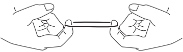

硬件安装及使用说明¶
安装说明¶
确认您的工作模式，并通过拨码开关来选择
说明书后页将详细描述工作模式和拨码选择方式。
固定安装雨量传感器
- 需要把雨量传感器安装在一个上方空旷的地方，不能有遮挡物遮挡。
- 安装固定臂沟槽宽19mm，长度51mm，带2个直径6.35mm的通孔，间距19mm。
- 信号导线通过传感器下方的防水孔引出，请务必确认使用室外用的防水密封线。
- 对于某些安装在管道里的应用场景，可以用电钻去掉安装固定臂。

根据左图组装雨量传感器
拉拽几次防水垫圈，这样安装时就能很容易贴合。也可以在防水垫圈和螺丝上涂些防水硅脂。
雨量传感器在安装之前必须保证罩子表面是干燥的。任何的水汽水滴都会导致测量误差。你可以选择性的使用一些干燥剂放在里面。如果雨量传感器没法及时排出存水，可以在罩子底部钻一个3mm直径的小孔辅助排水。
尺寸图示¶

使用警告¶
警告
不要在任何会因传感器指示错误而导致生命或物资损毁的地方使用雨量传感器。确保容错性，不因为一个组件发生错误（包括RS-01雨量传感器）就导致灾难性的后果，是系统设计师或者系统集成商的责任。天星智联有限公司，不承担任何因为传感器指示错误而导致的相关后果。
输出波形¶
指示灯¶
电路板正面中间的LED在开机时校准时点亮，校准通过完毕后熄灭。
正常工作时，在有效输出时点亮
拨码开关说明¶
通过拨码开关可以选择雨量传感器的工作模式，以及输出功能。拨码选择功能，仅在上电时读入配置。
- 拨码位1，2选择了当前的工作模式。
- 拨码位3，4 选择了输出功能：继电器输出模式，脉冲输出模式。
下表中， 1代表打开（ON），0代表关闭（OFF），X代表任意位置
测雨模式¶
b1 b2 b3 b4 0 0 x x 测雨模式下，每累积0.2mm降雨，输出一个有效脉冲
低功耗模式¶
b1 b2 b3 b4 0 1 x x 为降低功耗，雨量传感器将周期性的开启检测功能，无降雨时处于休眠状态。测量精度低于正常测雨模式。
★低功耗模式仅在测雨模式下有效
感雨模式¶
b1 b2 b3 b4 1 0 x x 感雨模式下，每感知到雨滴，输出有效脉冲1分钟。1分钟后，每10秒内，如果检测到有雨滴下落，则持续输出，否则终止输出。
工厂模式¶
b1 b2 b3 b4 1 1 x x 仅用于工厂测试，请勿使用
继电器输出模式¶
b1 b2 b3 b4 x x 0 0
- COM：继电器公共端
- NO： 当雨量达到量程时，NO引脚将与COM吸合导通，NC与COM断开
- NC： 继电器默认吸合引脚 ，雨量未达到量程时，与COM导通。
脉冲输出模式¶
b1 b2 b3 b4 x x 1 1
- COM：不使用
- NO： 脉冲信号（5V 50ms）输出端子
- NC： GND
UART 命令说明¶
★ <LF>代表换行“\n”
获取上电开始到当前时间的脉冲计数值。传感器保存的最大脉冲计数值为 4,294,967,295，请勿超限，重新上电将清零。
命令格式：
? <LF>应答格式：
1<LF>//当前计数值清除脉冲计数值，设置为0
命令格式：
/<LF>应答格式：
OK<LF>